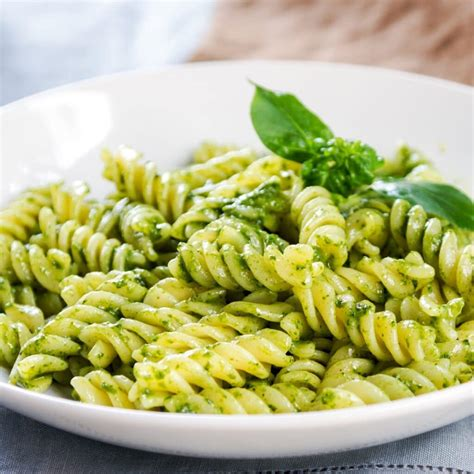

Pasta!!!

Tender corkscrew pasta is cloaked in a creamy mushroom sauce sporting flavors of three cheeses.
Ingredients
- 1 (10.75 ounce) can Campbell's® Condensed Cream of Mushroom Soup (Regular, 98% Fat Free or 25% Less Sodium)
- 1 (8 ounce) package shredded two-cheese blend
- ⅓ cup grated Parmesan cheese
- 1 cup milk
- ¼ teaspoon ground black pepper
- 4 cups cooked corkscrew-shaped pasta
Steps
- Mix soup, cheeses, milk and black pepper in 1 1/2-qt. casserole. Stir in pasta.
- Bake at 400 degrees F. for 20 min. or until hot.
Bari jabi?